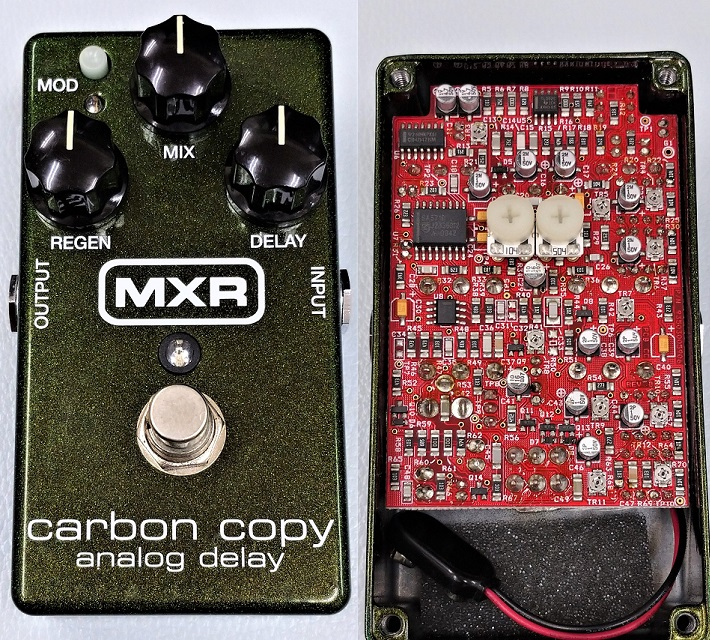
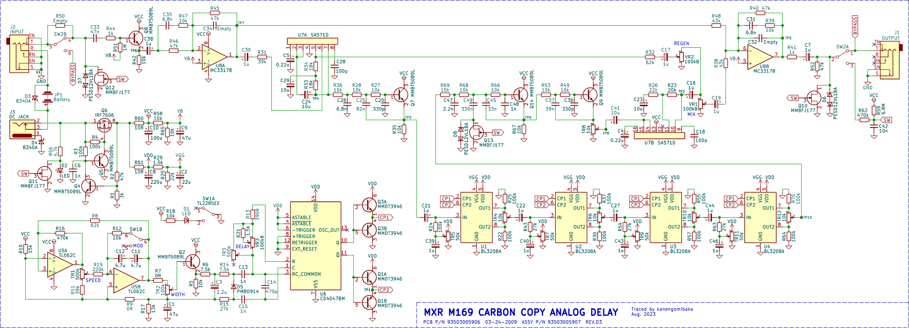
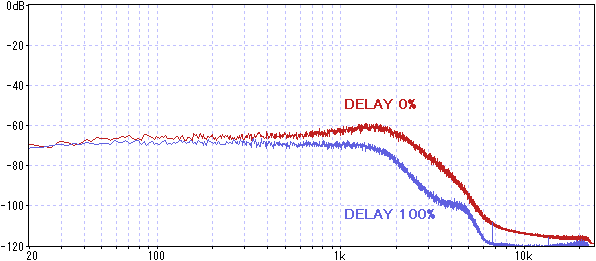
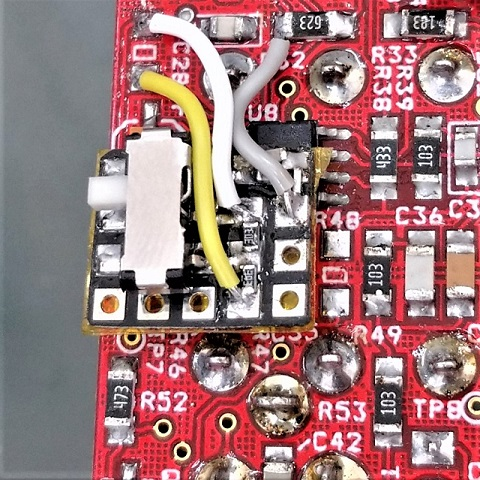

MXR M169 CARBON COPY ANALOG DELAY 修理・解析
2023年09月27日 カテゴリー：修理・改造・解析

MXR CARBON COPYはかなりの数売れているためか、ジャンク品が多く出回っています。今回手に入れた個体はディレイ音が出ない状態で、回路図がなく故障箇所の特定が困難だったため、解析することにしました。KiCadとLTspiceのデータはGitHubにあります。※このエフェクターの修理は表面実装のICや電解コンデンサの交換が必要となる場合があるため、初心者向きではありません。
- ＜参考ページ＞
- アナログディレイとは？…信号を遅延させる素子BBDについての基礎知識
- Noise Reduction with Companders…コンパンダICの回路に関する説明
- BBDを使用した300msアナログディレイBOSS DM-3 MOD 自作レポート…アナログディレイの自作・トリマー調整方法についての解説
▽回路図

BOSS DM-2と似ていて、プリエンファシス・ディエンファシスやBBD前後のローパスフィルタ（LPF）は全く同じ定数です。BBD用のクロック生成には専用IC（MN3102等）ではなく、Small Clone ChorusのようにCD4047が使われています。そしてLFOの回路を接続することによりモジュレーション機能を実現しています。電源部では、供給電圧が10Vを超えたあたりでQ4がオンになり電源供給が遮断されます。高い電圧を接続することにより電源部が故障する可能性は低そうです。
R48を外し、ディレイ音の周波数特性を測定しました。コンパンダのせいか周期スイープでは特性が乱れるため、ホワイトノイズを使用しています。

ディレイタイム最小ではほぼシミュレーション通りですが、ディレイタイムが長くなるとさらに高音域が減るようです。
【修理】
故障している部品を特定する方法としては、サイン波等を入力して回路図上のどこまで入力信号が来ているかを調べるのが一般的だと思います。以下ではその他の修理のヒントについて記載しています。
- FET
静電気保護ダイオードが実装されていない初期の個体で、FETが故障することがあります。
参考ページ→コラム：MXR Carbon Copy バージョン1・2の見分け方とサウンドの違い
- 電解コンデンサの経年劣化
MXR製品で電解コンデンサの経年劣化が報告されています。できれば全ての電解コンデンサを交換しておく方が安心です。私は半田ごてを2本使い、位置をズラすようなやり方で取り外しています。
参考ページ→MXR carbon copy analog delayの修理
- 表面実装トリマー（半固定抵抗器）
TR3、TR8は2時～3時、その他のトリマーは12時付近に設定されているかどうか確認します。また、見た目は大丈夫そうでも接触不良となっている可能性もあります。耐久性が低いため、調整する場合は最小限にした方がよいでしょう。
---2023年11月25日追記---
CARBON COPY MINIと同様のブライトスイッチを追加しました。

特性を確認後、R48を取り付けてホットボンドで覆いました。